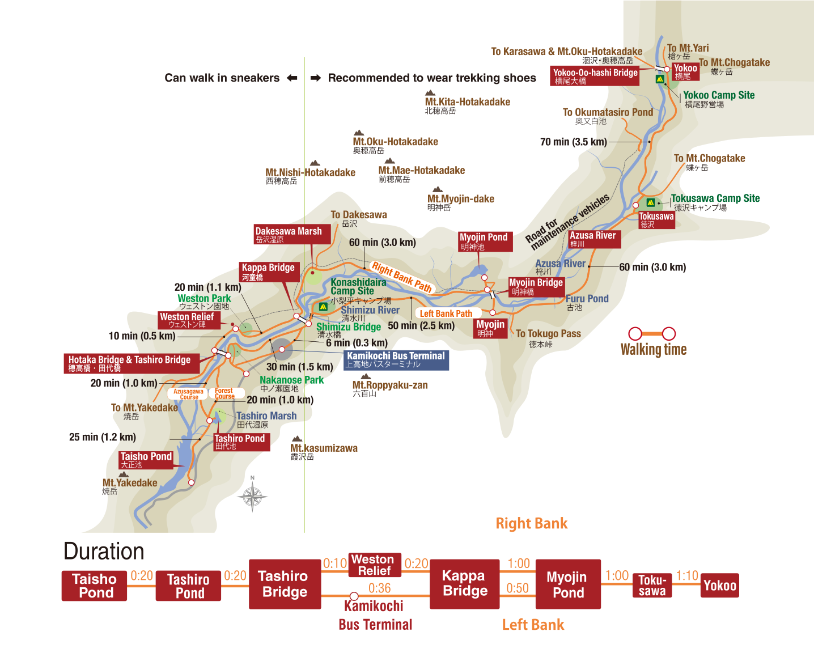

🏔️ 上高地健行路線導覽
Kamikochi Hiking & Trekking Guide
大正池 ➔ 河童橋
河童橋 ➔ 明神池
明神池 ➔ 橫尾
大正池 ➔ 河童橋（經典入門）
新手推薦 ★☆☆
⏱️ 預估時間：
約 1.5 - 2 小時
📏 總距離：
約 3.5 公里
🚶 路況：
平緩木棧道 / 碎石路
🚌 起點交通：
大正池巴士站

📍 沿途精華景點：
大正池
：清晨常有薄霧，倒映著燒岳與穗高連峰的絕景。
田代池 / 田代濕原
：可欣賞濕地植物與清澈見底的水流。
韋斯頓碑
：紀念將近代登山運動引入日本的英國傳教士。
河童橋
：上高地地標！地處梓川中央，背景為壯麗的穗高連峰。